Big Orange Crayonmusical thingsThe Donkeys and Casiotone for the Painfully Alone Valentine's, Albany, NY March 25th, 2006 So! I went electric! I think it's a lot easier, and things come out better. No more waiting for months to get pictures up because I don't have time to develop and scan them! (Or having pictures from shows not appear at all because they're still sitting undeveloped in my fridge.) One kind-of weird thing is taking pictures in color again - I've been doing shows in black and white for so long, that I sort of see it that way when I'm looking through the viewfinder. That's why these are in black and white... if you want to see what they look like in color, you can click here! Also, I don't think I've ever had this many (five!) people come along with me to a show before. I think it's awesome that this was for a band named Casiotone for the Painfully Alone. Anyway, pictures!: 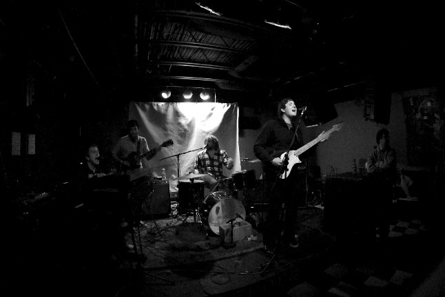 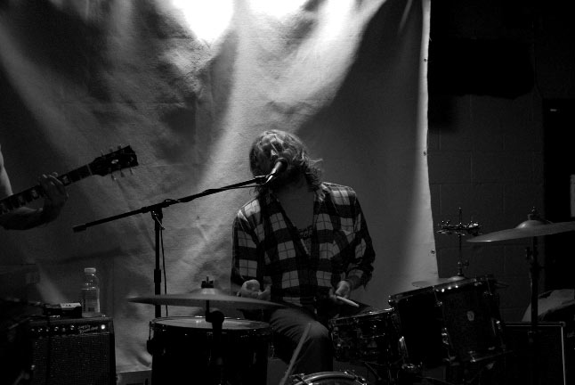 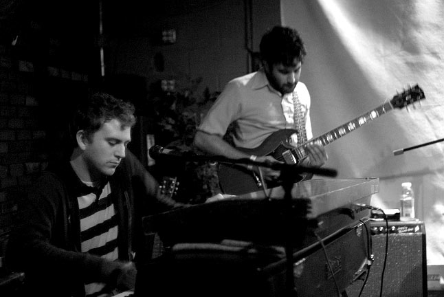 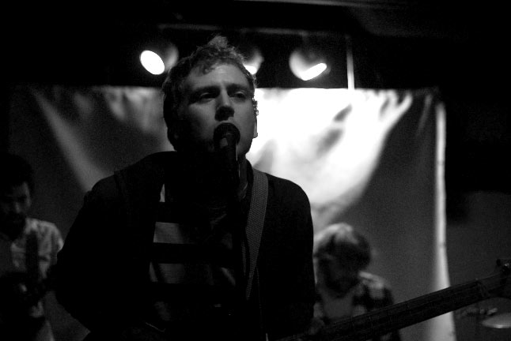 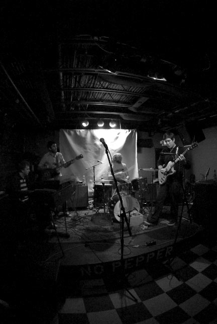 Casiotone for the Painfully Alone 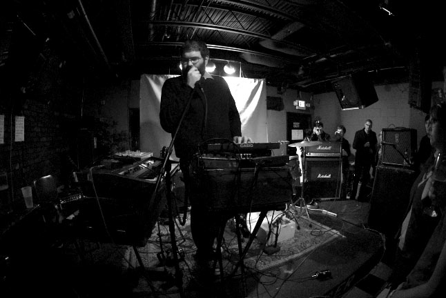 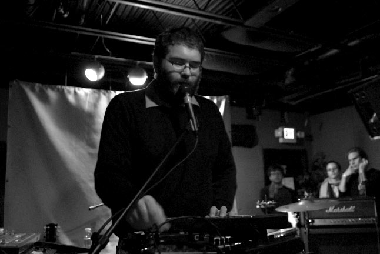 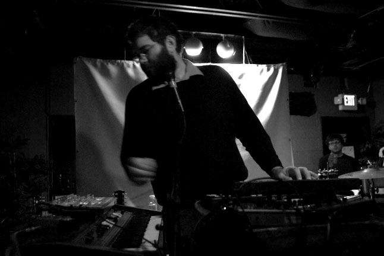 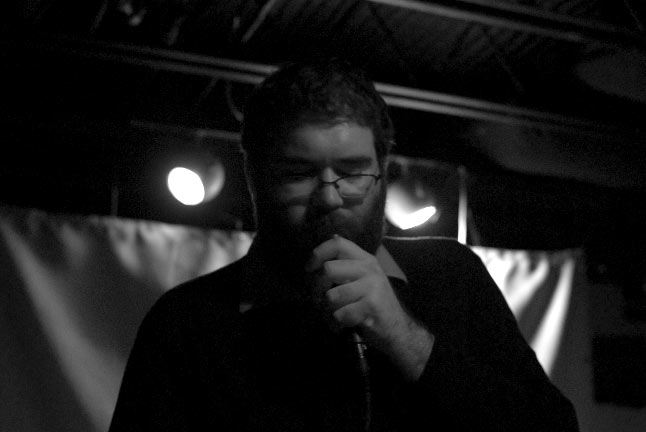 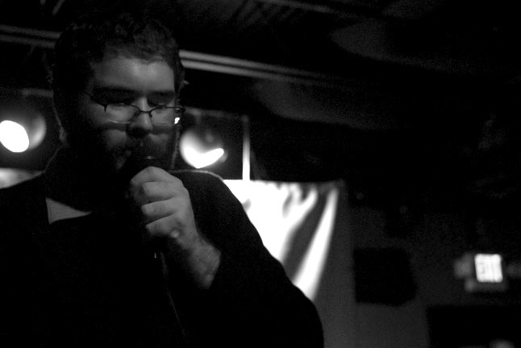 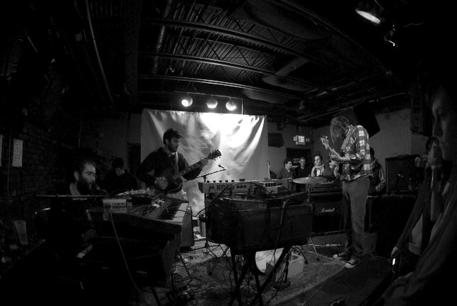 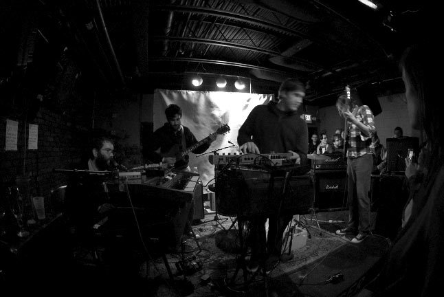 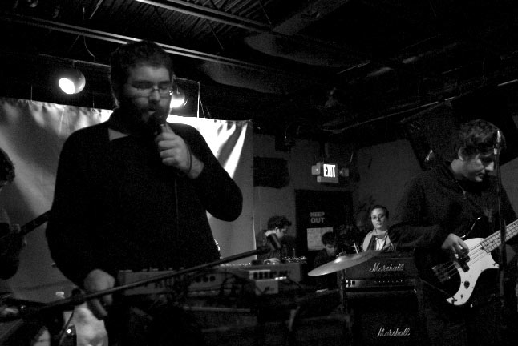 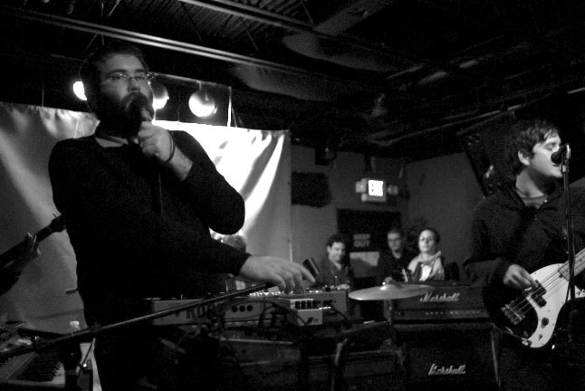 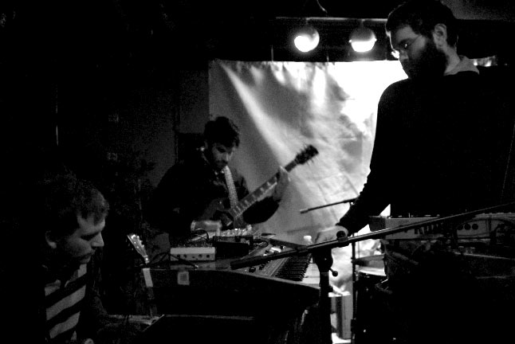 Please don't use these elsewhere unless you are in one of the bands or are a nice person. If you would like larger versions of any of these, just write and ask and I'll send them to you (unless you want a million different ones, in which case I might be too lazy). |